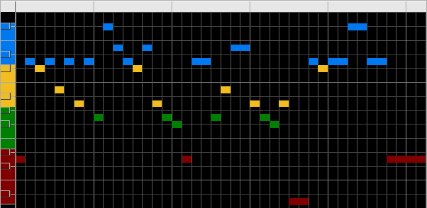

Fractal Music
Pitch Scaling
Color Map
Here is a color-coded map of the bins illustrating the pitch distribution.
The x-axis is time, the y-axis is pitch.

Return to
Pitch Scaling
.
© 2004 Harlan Brothers